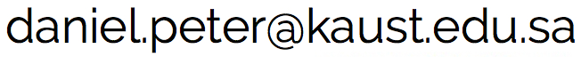

contact
|
daniel peter Assistant Professor of Geophysics contact information: KAUST - King Abdullah University of Science and Technology Physical Sciences and Engineering Division Earth Science and Engineering (ErSE) Program Al-Khawarizmi Building, Office 3602 Thuwal 23955-6900, Kingdom of Saudi Arabia Tel: +966 (54) 470 0405  |